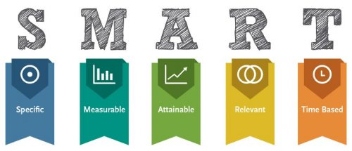

Технология SMART
Дорогие участники, в рамках программы мы будем делиться с вами ценными практиками и техниками, которые помогут вам в достижении ваших целей.
И сегодня мы начнем с самых азов. С фундамента, на котором построена вся теория и практика по достижению целей. И этой основой является навык правильной постановки цели.
Правильно поставленная цель сама по себе является практически половиной успеха. Потому что уже сама формулировка цели во многом предопределяет тип и характер действий по ее достижению.
Во всем мире получила признание и повсеместное распространение техника постановки цели в соответствии с критериями SMART. Давайте попробуем разобраться, что же это такое?
Постановка цели означает описание формата конечного результата. Что бы добавить конкретики используются определенные критерии.
Итак цель должна быть:
S - Specific: Конкретной.
Конкретность - Итог (картинка с деталями)
Контрольный вопрос: ЧТО Я ПОЛУЧУ В ИТОГЕ?
Цель должна быть предельно конкретной, чтобы четко понимать, что же мы на самом деле хотим получить. Не достаточно сказать «Хочу больше денег», важно уточнить, какую именно сумму денег ты хочешь «Заработать 350 000 рублей»
Пример .
"Я хочу стать чемпионом по дзюдо" - цель не конкретная. "Я хочу занять первое место на чемпионате города по дзюдо, проводимом в марте 2016 года." - цель конкретная.
M - Measurable: Измеримой.
Измеримость - (% / цифры / статистика / действия)
Контрольный вопрос: КАК Я ПОЙМУ, ЧТО РЕЗУЛЬТАТ ДОСТИГНУТ?
В любой сфере жизни есть показатели, с помощью которых можно четко ориентироваться на конечный результат. Вот пример таких показателей в различных сферах жизни:
Работа, бизнес: Деньги, оборот компании, количество заключенных сделок, количество потенциальных клиентов, и т.п.;
Обучение: Количество выученных слов, количество баллов в тесте по теме обучения, сдача экзамена;
Спорт, красота: Вес, объем бицепса, время 100 метровки, количество полученных комплиментов;
Здоровье: Время сна, пульс, давление, температура, холестерин, сахар в крови, лишний вес;
Отношения: Количество друзей и знакомых, свидания, количество и качество времени проведенного вместе.
Пример.
"Я хочу освоить десятипальцевый слепой метод печати" - цель не измеримая. "Я хочу печатать слепым методом печати 300 знаков в минуту" - цель измеримая.
A - Attainable: Достижимой.
Достижимость - Достаточность ресурсов.
Контрольный вопрос: БЛАГОДАРЯ КАКИМ РЕСУРСАМ Я МОГУ ЭТОГО ДОСТИЧЬ?
Важно иметь амбициозные цели, но в то же время иногда важно включить режим «Суровой правды», и не перегибать планку. Основывайтесь на раскладе достаточности всех видов ресурсов.
Пример.
Если человеку 50 лет и он никогда в жизни не занимался спортом, то цель "Пробежать марафон 30 км за 3 часа через 2 недели" - недостижимая. "Пробежать 5 км в любительском марафоне через 6 месяцев" - более реальна.
R - Relevant: Значимой.
Значимость - Насколько важно или актуально.
Контрольный вопрос: ДЛЯ ЧЕГО МНЕ ЭТО ВАЖНО?
Размышляя над тем, обладает ли задача значимостью, вы должны ответить на вопрос, зачем необходимо выполнить эту задачу, то есть, почему она важна с точки зрения целей более высокого уровня (вплоть до стратегических).
Знать, какую и зачем выполнять ту или иную работу необходимо для того, чтобы правильно расставить акценты. Например, вы планируете разобрать все бумаги, которыми завалено ваше рабочее место. Чаще всего, сам факт чистоты не всегда может иметь значимость (кто-то любит работать в творческом хаосе). Для кого-то, например куда важнее будет тот факт, что после уборки и распределения всех бумаг «по полочкам», вы сможете без труда и в считанные минуты находить необходимые бумаги (телефоны, заметки).
Пример.
Хочу заработать денег – сомнительная важность.
Хочу заработать деньги и купить родителям дом, в котором они смогут встретить свою старость, тем самым отблагодарив их за все то, что они для меня сделали. Вот где прячется настоящая важность!
T - Time bound: Ограниченной во времени.
Ограниченная во времени.
Контрольный вопрос: К КАКОМУ СРОКУ БУДЕТ ИЗМЕРЕН РЕЗУЛЬТАТ?
Каждую цель нужно определять по времени. К примеру, мы хотим стать учеными и решили поставить цель «Защитить докторскую диссертацию по математике», но если мы не поставим к какому сроку это сделать, то наше подсознание не сочтет нужным торопиться, полагая, что и в 75 лет мы сможем этого добиться.
Поэтому нужно задавать четкие временные рамки, вот как будет правильно звучать цель «Защитить докторскую диссертацию по математике в 2017 году».
Кроме обозначенных выше критериев есть еще несколько лайф хаков, которые придадут формулировке вашей цели окончательный лоск.
Цель должна быть персональной.
В ней должно быть слово «Я». Подсознание не воспринимает неточные и абстрактные формулировки.
Цель должна быть поставлена в настоящем времени.
Это также момент работы с подсознанием. Когда цель сформирована в настоящем времени, наше подсознание невольно примеряет на себя модель успеха, тем самым увеличивая шансы успешного достижения.
Успехов вам в достижении правильных целей!!!!

Пропустите свою цель по всем критериям SMART. И, в случае несоответствия ее указанным критериям, переформулируйте согласно полученным материалам.
В качестве ответа на д/з напишите в отчёт, что у вас получилось? Что самое полезное было в этом задании?